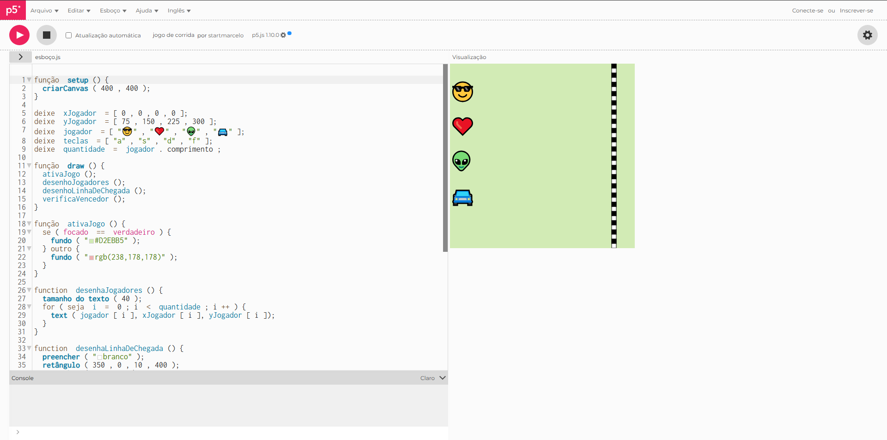
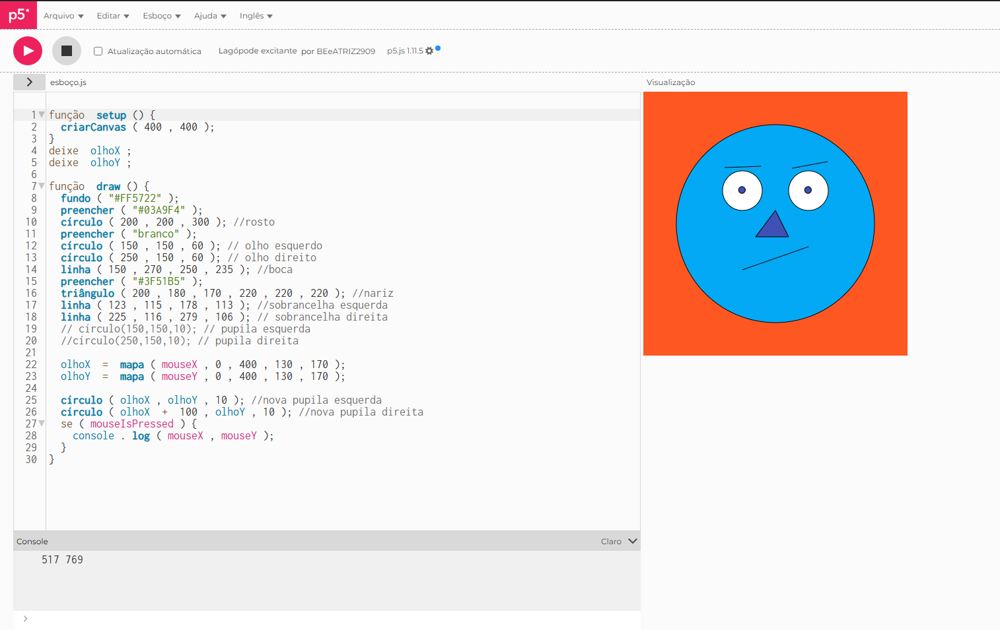
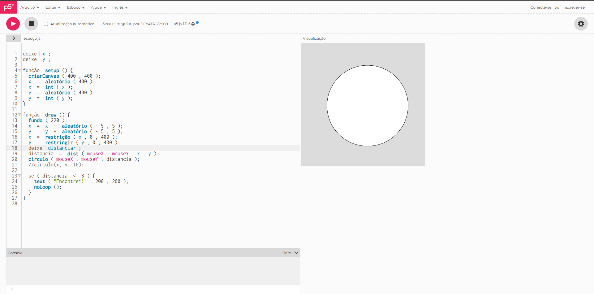

Meus projetos

Jogo de corrida: 4 jogadores
Este projeto foi desenvolvido com JavaScript e a ferramenta p5js.

Arte interativa: Efeito Monalisa
Este projeto foi desenvolvido com JavaScript e a ferramenta p5js.

Arte interativa: Quente frio dinâmico
Este projeto foi desenvolvido com JavaScript e a ferramenta p5js.